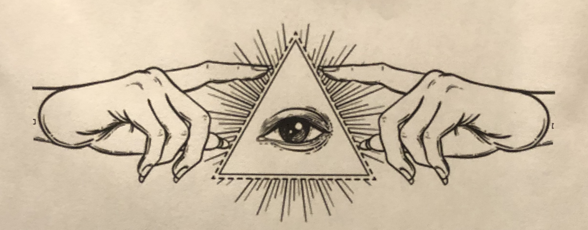

Two spiritual shops in Bushwick tell a familiar tale of gentrification...
by Arno Pedram
Catland stands on Flushing Avenue, in the more gentrified Bushwick. It self-describes as a “premier metaphysical boutique and event space.” The shop is on Instagram and Facebook and made it to fame when it organized to hex Brett Kavanaugh in 2018. The place is small but packed with mostly white, English-speaking people checking the oils, herbs, books, and various other mystical objects.
Southeast of Catland is another spiritual shop, with less of a hype, Botánica Las Tres Reynas. It stands inconspicuously on the corner of Menahan Street and Myrtle Avenue. A botánica is a Hispanic spiritual shop selling various Christian-adjacent products like holy water, oils or candles of saints. Inside, countless oils, candles, bath salts and mystical products about two to three times cheaper than in Catland fill metallic racks. Apparel and jewelry behind glass occupy the other part of the shop, still void of customers.
Lori Rodriguez, 28, grew up Catholic in a Central American family. For her, going to a botanica is akin to creating community. “More than making sure they sell the right stuff, it is to cultivate a relationship with people who run the store.” Three years ago, she started going to botanicas. She realized at the time that she was getting something from botanica practices that she wasn’t in witchcraft practices she found to be “very white.”
Las Tres Reynas is struggling with the increasing rents of a gentrifying Bushwick. Adriana Rogas opened Las Tres Reynas 13 years ago and has managed it by herself, until recently. When Rogas opened her botanica, the rent was about $2,500 a month. Now, the rent is about $4,300 a month, to which she has to add utilities and taxes.
Rogas said that “people are afraid,” now more than ever, “since this person came.” She suggested Trump’s attacks on migrants are frightening and impoverishing her customers. “Everything has changed around here. People don’t want to spend money, they would rather save the cash, send it back home and survive here.”
Witch Hat by Anton Barbarov from the Noun Project. Magic potion by Chris Homan from the Noun Project. Poor by auttapol from the Noun Project. expulsion by Nithinan Tatah from the Noun Project. Community by Adrien Coquet from the Noun Project